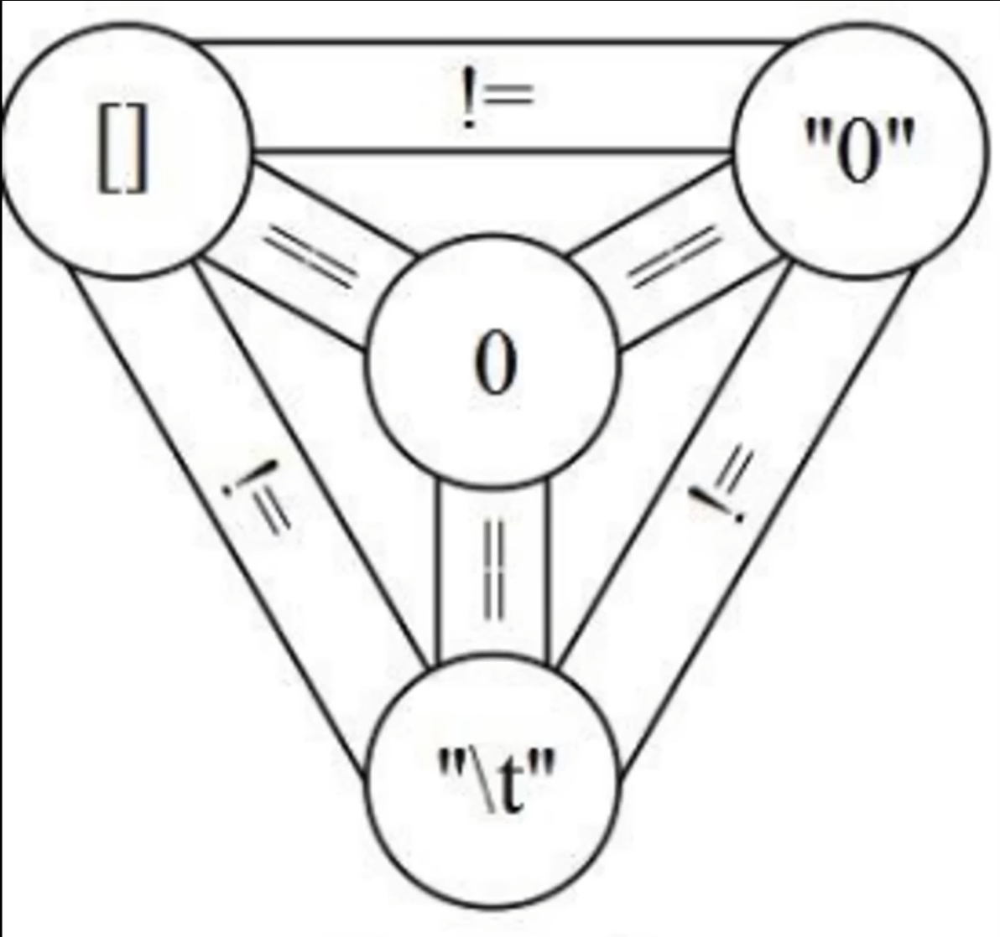
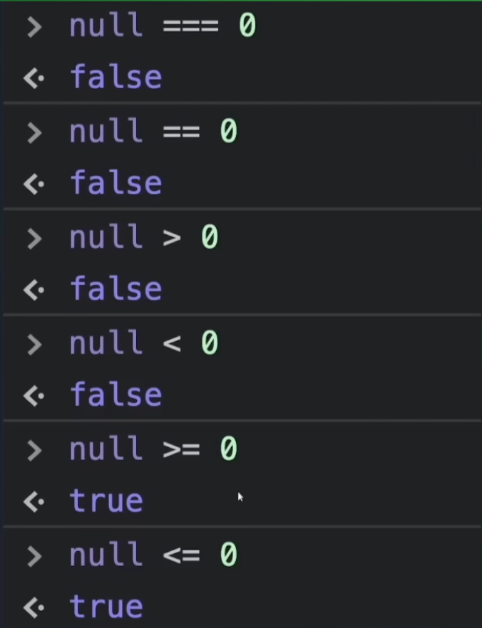

Introduction
-
-
Very simple, nothing crazy.
-
Well explained.
-
-
-
Explains Constructor Functions and Factory Functions.
-
The first half of the video talks about some lower-level technical things.
-
The rest of the video are demonstrations and applications.
-
Declarations
-
const-
Constants
-
-
let-
Variable with scope similar to GDScript, and similar to the vast majority of programming languages.
-
-
var-
Declares a variable in a "function scope", making things confusing and accessible in unintuitive places.
-
Simply never use
var.
-
-
In summary :
-
Never use
var. -
Prefer ES6.
-
Comments
-
Inline comment:
-
// Comment
-
-
"Print":
-
Console.log()
-
Boolean Operations
-
&&-
and
-
-
||-
or
-
-
!-
not
-
-
<,>,<=,>=-
comparisons
-
-
==-
"Equality Operator".
-
Performs type coercion. This means it will try to convert values before comparing, which can lead to unexpected results in some cases.
console.log(5 == '5'); // true, because '5' is converted to number 5 before comparison console.log(0 == false); // true, because false is converted to 0 before comparison console.log('' == false); // true, because '' is converted to false before comparison -
-
!==-
Negation of the "Equality Operator", i.e., a "Not Equal" operator.
-
-
===-
"Strict Equality Operator".
-
Does not perform type coercion. Checks equality in value and type.
console.log(5 === '5'); // false, because '5' is a string and 5 is a number console.log(0 === false); // false, because 0 is a number and false is a boolean console.log('' === false); // false, because '' is a string and false is a boolean-
 .
-
 .
-
-
!===-
Negation of the "Strict Equality Operator", i.e., a "Strict Not Equal" operator.
-
Strings
-
~Various things, etc.
-
-
Used to format output in a clearer way.
-
Super useful.
-
undefined vs null
-
undefined-
Indicates a variable was declared but not yet assigned a value.
-
-
null-
Represents the intentional absence of a value. Used when you explicitly want to indicate an invalid or empty value.
-
-
Differences:
-
undefinedis a JavaScript type, whilenullis a special value of typeobject. -
undefinedis automatically assigned to uninitialized variables, whilenullmust be assigned explicitly. -
To check for
undefinedusetypeofor direct comparison (=== undefined). To check fornulluse=== null.
-
Imports
import mongoose from 'mongoose';
-
Exporting everything.
import * as utils from './utils.ts'; -
Exporting only the
sumfunction.
import {sum} from './utils.ts';
- Function declaration:
js
export function sum(a: number, b: number): number {
return a + b;
}
```
-
Exporting only the
sumfunction as the DEFAULT export.
import sum from './utils.ts';
- Function declaration:
js
export default function sum(a: number, b: number): number {
return a + b;
}
```
EcmaScript: ES6 vs Old Alternatives
-
ES6 (ECMAScript 2015).
Imports
-
Node.js:
const mongoose = require('mongoose');
-
ES6:
import mongoose from 'mongoose';
Error Handling
-
try:-
The code inside this block is what you want to monitor for errors. If an error occurs inside this block, control passes directly to the
catchblock.
-
-
catch:-
If an error occurs inside the
tryblock, JavaScript stops normal execution and begins executing thecatchblock. Theerrorobject contains information about the error, including the error message (error.message).
-
-
finally(optional):-
This block is optional and will execute regardless of whether an error occurred. It is useful for cleaning up resources or performing actions that must run regardless of how the
tryblock finished.
-
function divideNumbers(a, b) {
try {
if (b === 0) {
throw new Error('Division by zero is not allowed');
}
return a / b;
} catch (error) {
console.error('An error occurred:', error.message);
return null; // Returns null to indicate an error occurred
} finally {
console.log('Division operation finished');
}
}
console.log(divideNumbers(10, 2)); // Output: 5
console.log(divideNumbers(10, 0)); // Expected output: An error occurred: Division by zero is not allowed
// Division operation finished
// Output: null
Types
Array
-
"Arrays are ordered collections of values. They can store any data type, like numbers, strings, objects, etc."
-
The initial index is 0 .
let arr = [1, 2, 3, 4, 5];
let arr2 = new Array(1, 2, 3, 4, 5);
-
Access
-
console.log(arr[0]); // 1 -
console.log(arr[4]); // 5
-
-
push : Adds one or more elements to the end of the array.
-
arr.push(6); // [1, 2, 3, 4, 5, 6]
-
-
pop :
-
Removes the last element of the array.
-
arr.pop(); // [1, 2, 3, 4, 5]
-
-
shift :
-
Removes the first element of the array.
-
arr.shift(); // [2, 3, 4, 5]
-
-
unshift :
-
Adds one or more elements to the beginning of the array.
-
arr.unshift(0); // [0, 2, 3, 4, 5]
-
-
map :
-
Creates a new array with the results of calling a function on every element.
-
let arr3 = arr.map(x => x * 2); // [2, 4, 6, 8, 10]
-
-
filter :
-
Creates a new array with all elements that pass the test implemented by the function.
-
let arr4 = arr.filter(x => x > 3); // [4, 5]
-
Set
-
"Collection of unique items".
-
"You can add, delete and check existence of values in a
Set, but not access them by index."
let set = new Set([1, 2, 3, 4, 5]);
-
add :
-
Adds a value to the set.
-
set.add(6); // Set(6) { 1, 2, 3, 4, 5, 6 }
-
-
delete :
-
Removes a value from the set.
-
set.delete(1); // Set(5) { 2, 3, 4, 5, 6 }
-
-
has :
-
Checks if a value exists in the set.
-
console.log(set.has(3)); // true
-
-
size :
-
Returns the number of values in the set.
-
console.log(set.size); // 5
-
Maps (aka Dictionaries)
-
"Maps are collections of key-value pairs. They allow any type of value (objects, functions, etc.) as a key."
let map = new Map([
["a", 1],
["b", 2],
["c", 3]
]);
-
set :
-
Adds or updates a key-value pair in the map.
-
map.set("d", 4); // Map(4) { 'a' => 1, 'b' => 2, 'c' => 3, 'd' => 4 }
-
-
get :
-
Returns the value associated with a key.
-
console.log(map.get("a")); // 1
-
-
has :
-
Checks if a key exists in the map.
-
console.log(map.has("b")); // true
-
-
delete :
-
Removes a key-value pair from the map.
-
map.delete("c"); // Map(3) { 'a' => 1, 'b' => 2, 'd' => 4 }
-
-
size :
-
Returns the number of key-value pairs in the map.
-
console.log(map.size); // 3
-
Loops
for
for (let i = 0; i < 5; i++) {
}
Functions
-
"In JS, functions are objects".
Functions
function fun(a, b) {
return a + b;
}
Anonymous Functions
-
No Name :
-
Anonymous functions have no name, so you cannot call them directly after defining them unless they are assigned to a variable or passed as an argument.
-
-
Common Use in Callbacks :
-
Widely used as callbacks in events, timers, or array methods.
-
-
Inline Definition :
-
Often defined inline where needed.
-
-
Example:
// Traditional syntax const anonFunc = function(a, b) { return a + b; }; console.log(anonFunc(3, 4)); // 7 // Arrow function syntax const anonFunc = (a, b) => a + b; console.log(anonFunc(3, 4)); // 7
Anonymous Functions: Lambda Functions (Arrow Functions)
-
Lambda functions are always anonymous.
-
Concise Syntax :
-
Arrow functions allow more concise definition. If the function has a single expression,
returnis implicit and{}can be omitted.
-
-
No own
this:-
Arrow functions do not have their own
this. They inheritthisfrom the defining context.
-
-
Not suitable as methods :
-
Due to
thisbehavior, arrow functions are not suitable as object methods.
-
-
No
arguments:-
Arrow functions do not have the
argumentsobject. Use rest parameters (...args) instead.
-
-
Basic example:
// Normal function function sum(a, b) { return a + b; } // Arrow function const sum = (a, b) => a + b; -
Usage example:
// Array of numbers const numbers = [1, 2, 3, 4, 5]; // Using arrow function with map to double values const doubled = numbers.map(num => num * 2); console.log(doubled); // [2, 4, 6, 8, 10] -
Multiline usage:
const sum = (a, b) => { const result = a + b; return result; }; console.log(sum(3, 4)); // 7
Objects
this
-
Normally a reference to an object.
-
If used in the global scope:
-
"Window object in the browser".
-
Objects: Creating objects
Using Object Literal
-
The most common and simple way to create an object.
const person = {
name: "João",
age: 30,
greet: function() {
console.log(`Hello, my name is ${this.name}`);
}
};
// Accessing properties
console.log(person.name); // João
console.log(person["age"]); // 30
// Calling a method
person.greet(); // Hello, my name is João
-
"In JavaScript,
constcreates a constant that cannot be reassigned. However, that does not mean the value inside the constant object cannot be modified.constprotects the reference to the object, but not the mutability of the object itself." -
"You can declare an object with
let. This allows both modification of internal properties and reassignment of the variable. However, if you don't intend to reassign, usingconstis recommended to indicate the reference should not change."
Using new Object
const car = new Object();
car.brand = "Toyota";
car.model = "Corolla";
car.year = 2020;
console.log(car.brand); // Toyota
-
const car = {};orconst car = new Object();:-
They are exactly the same. Under the hood
{}isnew Object().
-
-
"Yes, in JavaScript you can access and set properties that were not previously defined. If you do
car.brandandbranddoesn't exist, JavaScript returnsundefinedwithout throwing an error. If you assign a value to a nonexistent property, JavaScript creates that property on the object."
Using Constructor Functions or Factory Functions (uncommon)
-
Both are ways to create objects while defining construction characteristics.
-
Prefer 'Constructor Functions' over 'Factory Functions', but both work.
-
'Constructor Function':
-
Use
new.
function Person(name, age) { this.name = name; this.age = age; this.greet = function() { console.log(`Hello, my name is ${this.name}`); }; } const maria = new Person("Maria", 25); console.log(maria.name); // Maria maria.greet(); // Hello, my name is Maria -
-
'Factory Function':
-
No need to use
new.
function createCircle(radius) { return { radius, draw: function() { console.log('drawing') } }; } const my_circle = createCircle(1); -
Using Classes
-
"The most common and modern way to construct classes in JavaScript is using
classsyntax introduced in ES6 (2015). While constructor functions still work,classsyntax is preferred for clarity and familiarity."
class Person {
constructor(name, age) {
this.name = name;
this.age = age;
}
greet() {
console.log(`Hello, my name is ${this.name}`);
}
}
const pedro = new Person("Pedro", 40);
console.log(pedro.name); // Pedro
pedro.greet(); // Hello, my name is Pedro
Objects: Manipulation
-
Class used in examples:
const book = {}
book.title = "JavaScript: The Definitive Guide";
book.author = "David Flanagan";
Add and update properties
book.year = 2020; // Adding a new property
book.year = 2021; // Updating an existing property
Remove properties
delete book.year;
console.log(book); // {title: "JavaScript: The Definitive Guide", author: "David Flanagan"}
Access
-
Dynamic access (using a variable as property name):
const key = "title";
console.log(book[key]); // JavaScript: The Definitive Guide
-
Keys:
console.log(Object.keys(book)); // ["title", "author", "year"]
-
Values:
console.log(Object.values(book)); // ["JavaScript: The Definitive Guide", "David Flanagan", 2021]
-
Entries:
console.log(Object.entries(book)); // [["title", "JavaScript: The Definitive Guide"], ["author", "David Flanagan"], ["year", 2021]]
Objects: Sets and Gets
class Person {
constructor(name, gender) {
this._name = name;
this._gender = gender;
}
// Getter for gender property
get gender() {
return this._gender;
}
// Setter for gender property
set gender(newGender) {
this._gender = newGender;
}
}
const person = new Person("João", "Male");
// Using the getter
console.log(person.gender); // Male
// Using the setter
person.gender = "Female";
console.log(person.gender); // Female
Asynchronism and Threads
-
"Promise".
-
"Resolve".
-
"Reject".
-
".then()"
-
".catch()".
-
-
"async function".